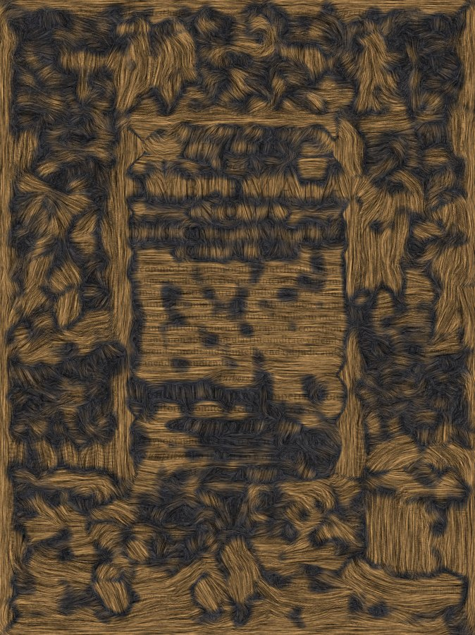
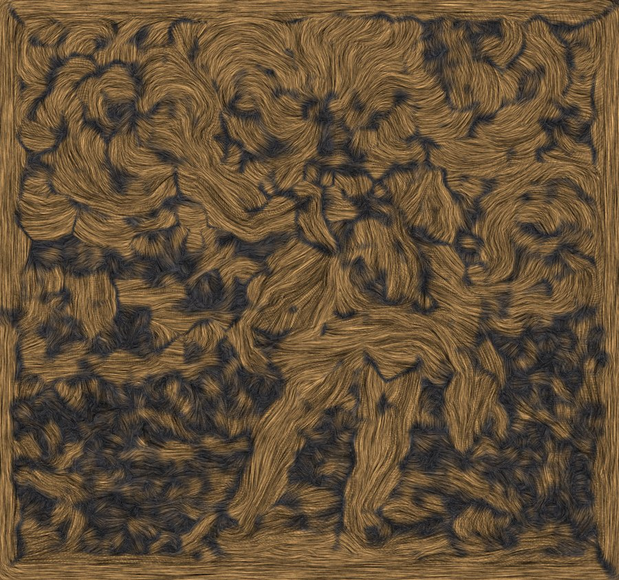
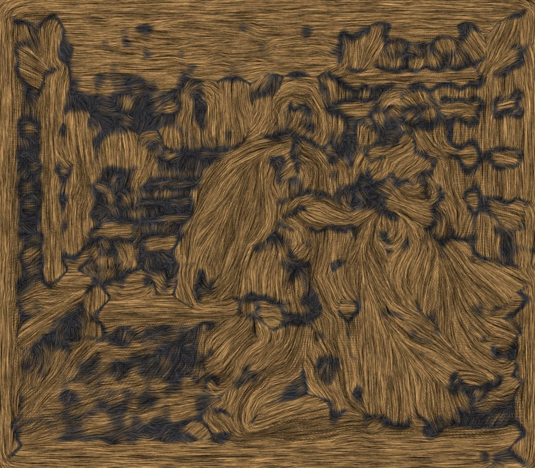
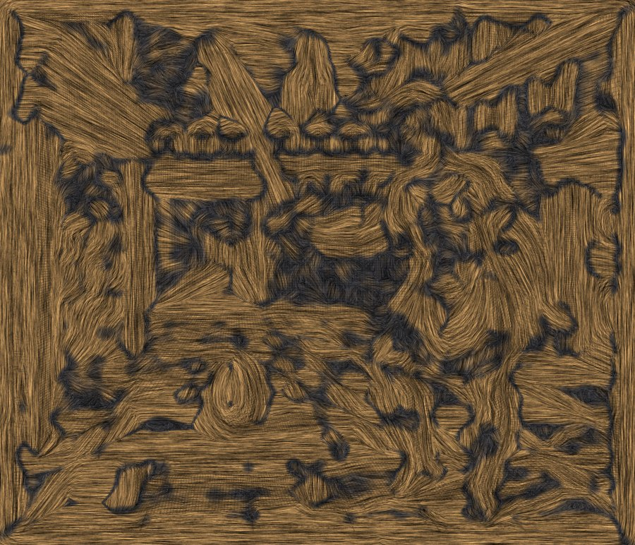
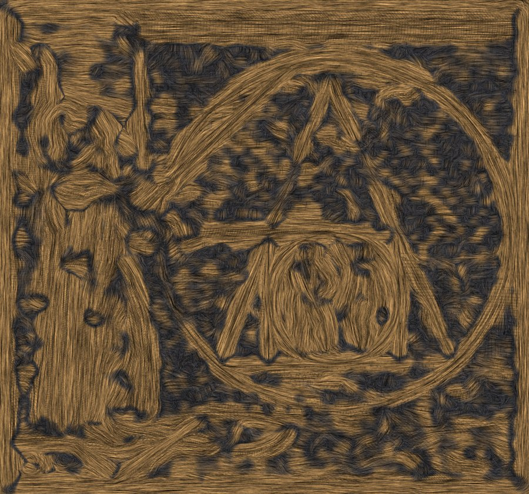
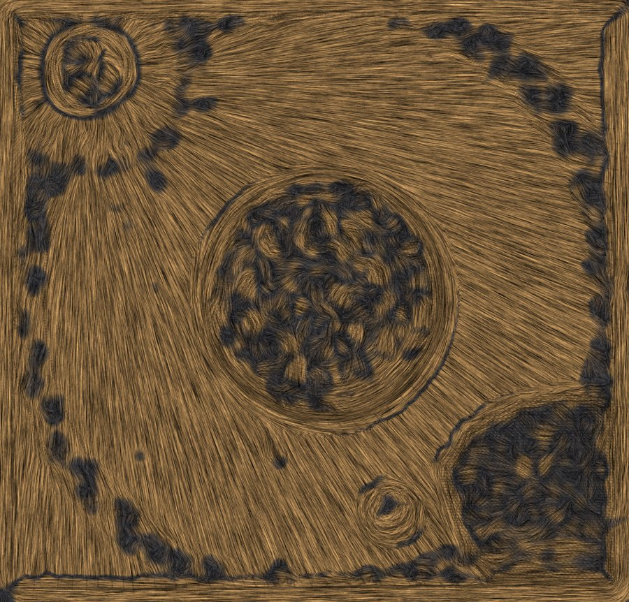

Two experiments against hand-measured ground truth, and what they changed: an existence test for vanishing points, and reading shape from the burin strokes.
Two experiments, run against plates whose answers were measured by hand first, so that a method could be shown to be wrong rather than argued about. Both changed what the pipeline does.
Three ways of getting the burin hatching out of the way before detecting lines, scored against the hand measurement. Coarse ¼-scale simply detects on a downsampled plate: hatching is fine and high-frequency, construction lines are long and survive.
| plate | truth | baseline | coarse ¼-scale | texture-suppressed |
|---|---|---|---|---|
| Emblem VIII ruled courtyard | 0.455 | 0.274 err 0.181 | 0.469 err 0.014 | 0.390 err 0.065 |
| Emblem XXI frontoparallel wall | 0.286 | 0.602 err 0.316 | 0.877 err 0.591 | 0.531 err 0.245 |
| Emblem I figure landscape | 0.57 | 0.678 err 0.108 | 0.145 err 0.425 | 0.749 err 0.179 |
Read the halves separately, because they say opposite things.
On the ruled plate, scale space essentially solves it. Emblem
VIII's horizon error falls from 0.181 to 0.014 — within a hair of the
hand measurement — for the cost of one resize.
On the other two, every variant fails, and it is not the detector's fault. Emblem XXI's wall is frontoparallel: it has no vanishing point, which is exactly why its great circle reads as a true circle. Emblem I is a landscape with no architecture. The solver was confidently answering a question those plates do not pose, and better line detection made it worse, not better.
A real ruled construction is scale-invariant. Solve the vanishing point independently at ⅙, ¼ and ⅓ scale and the three answers should agree, because the construction lines are long and survive every scale. Hatching noise does not: which "vanishing point" it produces depends on which frequency band you happen to look at. So the spread of the three answers is a test of whether there is anything there to find.
| plate | scale spread | verdict | what it means |
|---|---|---|---|
| Emblem XLV | 0.006 | ruled | a real construction, and the test says so |
| Emblem I | 0.125 | open | landscape; nothing to converge |
| Emblem VIII | 0.284 | open | construction present but half-occluded by the swordsman. The 1/4-scale solve is right to 0.014, the others disagree, and the test correctly declines to confirm it unattended |
| Emblem XXI | 0.358 | open | frontoparallel wall: no vanishing point exists |
| Emblem V | 0.456 | open | figures and drapery only |
Applying the test to all 51 plates:
| class | plates | meaning |
|---|---|---|
| ruled | 2 | a construction confirmed at three scales; the vanishing point is meaningful |
| uncertain | 6 | probably a construction, but not trustworthy unattended — usually architecture partly occluded by figures |
| frontal | 1 | built parallel to the picture plane; there is nothing to converge |
| open | 42 | foliage, terrain, drapery and figures — which is most of this book |
The corpus now carries 5 horizons instead of 51. 3 hand-measured, 2 confirmed automatically, and 46 plates where the record is deliberately blank and says why.
That is a much smaller number than before and it is a better one. Every plate used to carry a horizon and a confidence score; most of those horizons were wrong, and the score made them look considered. A blank field that explains itself is more useful to work from than a number that has to be checked before it can be trusted.
It is also a finding about Merian rather than about the software. Only a couple of plates in Atalanta Fugiens are built on a ruled perspective construction at all. It is overwhelmingly a book of figures in landscape — which is why the estimator that matters next is the one that reads the horizon off a standing figure, and why the thing blocking it is that the extraction pipeline has found five figures in fifty-one plates.
The gallery's 213 "carved relief" models drive a displacement map from the plate's luminance — light paper proud, dark ink incised. That is semantically inverted. Ink density in an engraving is tone, and tone is shading: the darkest part of a drawn sphere is its shadowed side, not a groove, and the darkest part of Emblem VIII is the inside of the vault, the furthest thing away.
The burin follows the form, so stroke direction is evidence about surface orientation and stroke density is tone. A structure tensor recovers the stroke field; the height gradient is taken across the strokes, signed by which way the tone increases; that field is integrated to a surface. Below is the recovered stroke field for each plate processed so far — every one of these is read off the engraving, not drawn.
Open the Relief Lab ▸ sweep a raking light across both surfaces and compare






Both experiments are reproducible: tools/classify_armature.py for the
existence test, tools/hatching_relief.py for the relief. The full research
survey and the ordered plan built on these results are in
PROPOSAL_PHASE6.md, with companion proposals for EmblemPrintShop,
EmblemPapercraft and 3dprintlab.